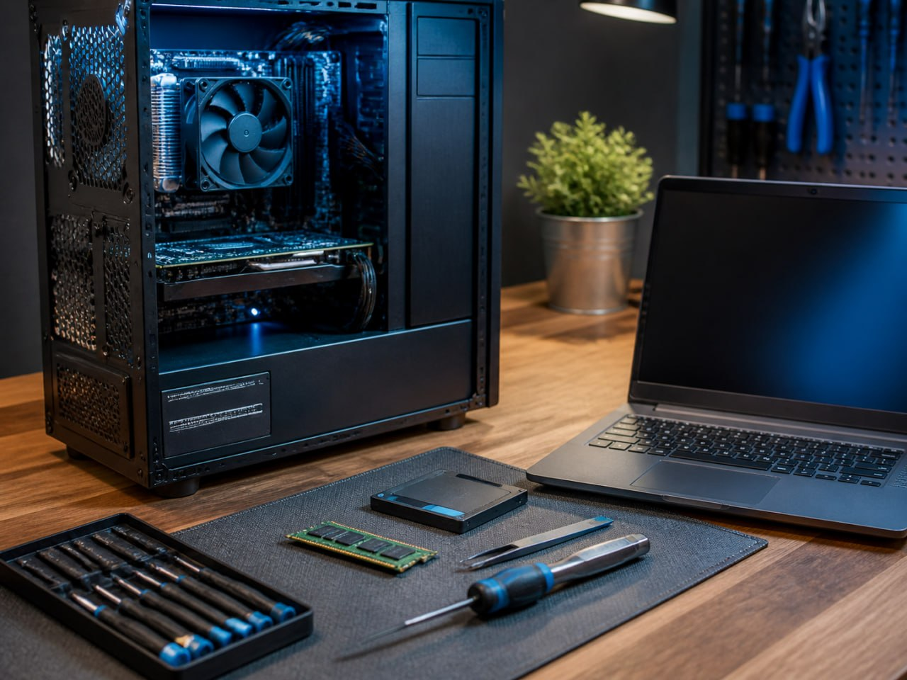
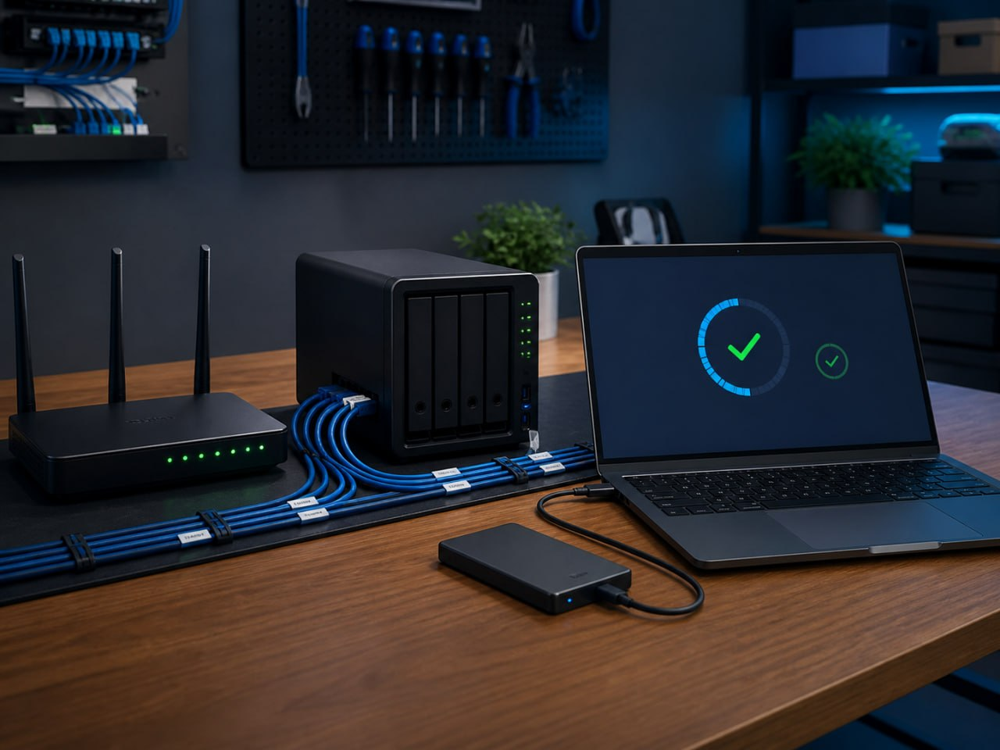
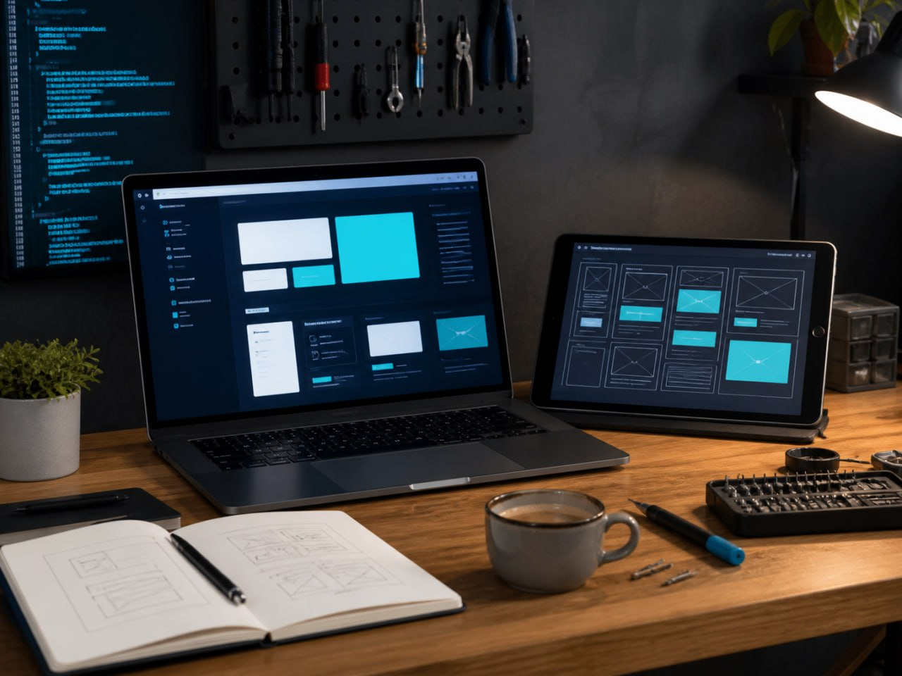
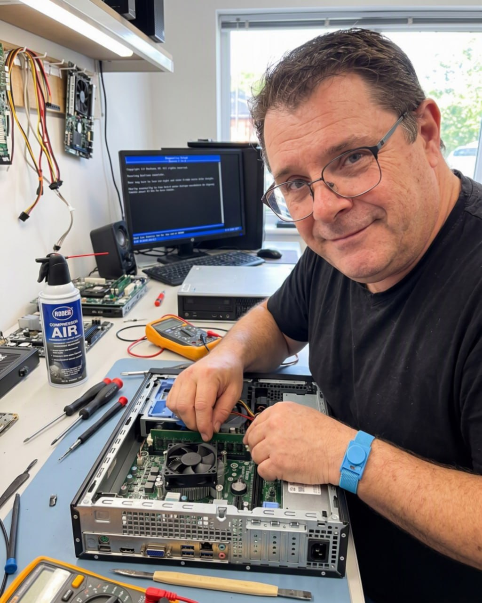
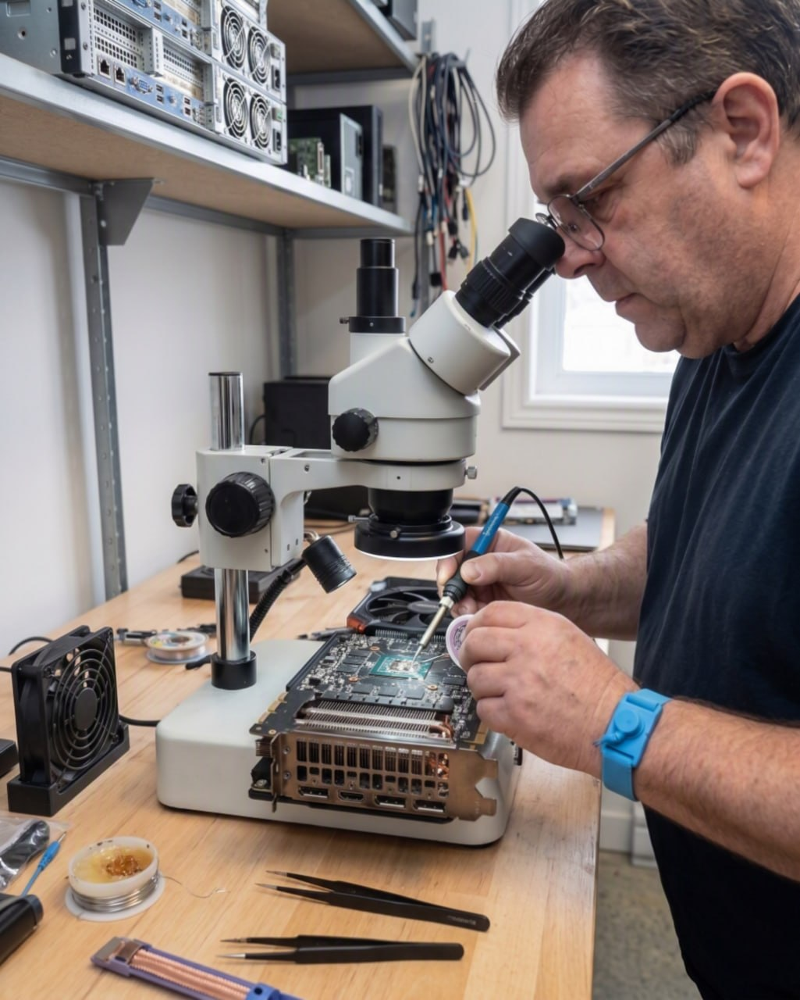
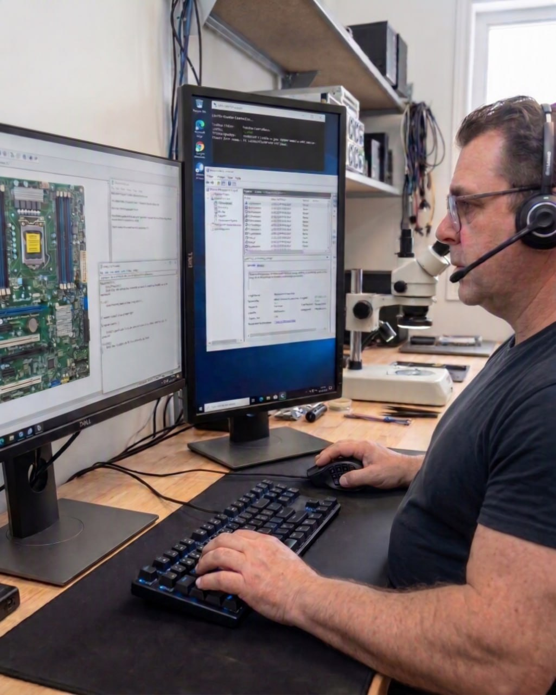

🛠️
Réparation et dépannage PC
Ordinateur lent, écran bleu, ne démarre plus ? On diagnostique et on répare — sans vous vendre ce dont vous n'avez pas besoin.
Un seul interlocuteur pour vos problèmes de PC — du plus simple au plus tordu.

Ordinateur lent, écran bleu, ne démarre plus ? On diagnostique et on répare — sans vous vendre ce dont vous n'avez pas besoin.
Nouveau poste, Windows, imprimante, réseau Wi-Fi, sauvegarde : on installe et on configure proprement du premier coup.
Plantages, logiciels qui coincent, infections malware : on nettoie, on stabilise et on sécurise votre système.
Un problème rapide ? On vous prend la main à distance, sans laisser de logiciel installé après la session. Souvent résolu en quelques minutes, sans déplacement.

Configuration WiFi, imprimante et partage. Sauvegarde automatique de vos données pour ne jamais tout perdre.

Site vitrine ou institutionnel : rapide et professionnel. Hébergement et nom de domaine configurés, avec bases de référencement local.

30 minutes de formation anti-stress pour prendre en main votre PC en confiance. Patience et pédagogie, sans jargon.
Pages de service dédiées :
Pas de promesse vague. Voici des interventions réelles avec leur impact mesuré.
Réparations, installations et configurations faites sur place.



au-delà du dépannage : un site professionnel, conçu et déployé en local par le même technicien qui répare votre PC.
Site professionnel clair et rapide pour votre entreprise. Hébergé, sécurisé, optimisé pour le référencement local (Google Nicolet / Bécancour). Dès 1500 $.
Voir les tarifs →